Paleta de cores
Medida no navegador: fundos ponderados pela área ocupada, textos pela quantidade de caracteres. Destaques reúnem cores saturadas e fundos de botão.
Fundos
rgb(14, 7, 0)
rgb(25, 25, 25)
rgb(231, 231, 231)
rgb(255, 255, 255)
Textos
rgb(255, 255, 255)
rgb(51, 51, 51)
rgb(14, 7, 0)
rgb(122, 122, 122)
rgb(138, 136, 136)
rgb(246, 246, 246)
Destaques
rgb(14, 7, 0)
rgb(255, 255, 255)
Gradientes
linear-gradient(rgba(255, 255, 255, 0.03) 0%, rgba(0, 0, 0, 0.65) 100%)linear-gradient(rgba(255, 255, 255, 0.02) 0%, rgba(0, 0, 0, 0.51) 100%)linear-gradient(90deg, rgb(14, 7, 0) 0%, rgba(255, 255, 255, 0) 60%)linear-gradient(270deg, rgb(14, 7, 0) 0%, rgba(255, 255, 255, 0) 60%)Tipografia
Escala usada (desktop 1440px)
| Tamanho | Peso | Família | Amostra |
|---|---|---|---|
| 74px | 600 | El Messiri | Texto de exemplo |
| 52px | 600 | El Messiri | Texto de exemplo |
| 52px | 800 | Montserrat | Texto de exemplo |
| 42px | 600 | El Messiri | Texto de exemplo |
| 39px | 800 | Montserrat | Texto de exemplo |
| 28px | 600 | El Messiri | Texto de exemplo |
| 24px | 600 | El Messiri | Texto de exemplo |
| 20px | 600 | El Messiri | Texto de exemplo |
| 18px | 500 | Montserrat | Texto de exemplo |
| 18px | 600 | Montserrat | Texto de exemplo |
Mobile (390px): 40px/600, 28px/600, 28px/800, 24px/600, 20px/600, 18px/500, 16px/400, 16px/600 · H1 no mobile: sem h1 semântico
Tags
| Tag | Família | Tamanho | Peso | Altura de linha | Espaçamento | Caixa | Cor |
|---|---|---|---|---|---|---|---|
| <h2> | El Messiri | 52px | 600 | 52px | normal | none | #0E0700 |
| <h3> | Karla | 16px | 400 | 19.2px | -0.2px | none | #FFFFFFAD |
| <h4> | Montserrat | 52px | 800 | 48.36px | normal | uppercase | #000000 |
| <p> | Karla | 16px | 400 | 24px | -0.2px | none | #FFFFFF99 |
Botões
Recriados com os estilos computados reais. Efeitos de hover e animação não aparecem aqui; veja a seção de animações.
fundo #02010100 · texto #FFFFFF · raio 0px · padding 20px 0px · 20px/600 none · 6x na páginafundo #0E0700 · texto #F6F6F6 · raio 50px · padding 16px 34px · 14px/500 uppercase · 3x na páginafundo #FFFFFF · texto #000000 · raio 50px · padding 16px 34px · 14px/500 uppercase · 2x na páginaCards e containers
Excelente médico. Fiz minha barriga com o Dr. Rogério e simplesmente amei. Ele e sua equip
raio 20px · sombra rgba(0, 0, 0, 0.16) 0px 3px 15px 0px · borda 0px none rgb(51, 51, 51) · 315x363px+ 4 Cirurgias Realizadas
raio 20px · sombra none · borda 1px solid rgb(236, 236, 236) · 383x112px+ 2.760 Autoestimas Renovadas Mais de 18 anos de experiência e excelência em cirurgia plás
raio 20px · sombra none · borda 0px none rgb(51, 51, 51) · 560x163pxReferência Nacional em Cirurgia Plástica Corporal
raio 20px · sombra none · borda 0px none rgb(234, 234, 235) · 260x246pxBordas, raios e sombras
Sombras
rgba(0, 0, 0, 0.16) 0px 3px 15px 0pxEspaçamentos
- Largura do conteúdo mais comum: 1140px
- Padding vertical das seções (topo/base): 0px/0px (6x), 0px/80px (2x), 120px/100px (2x)
- Gaps mais usados (flex/grid): 20px
- Altura total da página: 10676px em 18 seções
Estrutura e ritmo de cores das seções
Cada faixa é uma seção de topo, com altura proporcional e a cor ou imagem de fundo real.
Animações, ícones e bibliotecas
- Keyframes próprios: aniFade, aniUp, blink, bounce, bounceIn, bounceInDown, bounceInLeft, bounceInRight, bounceInUp, card-animation-left, card-animation-right, fade, fadeIn, fadeInDown, fadeInLeft, fadeInRight, fadeInUp, flash, headShake, jello
- Animações de entrada do Elementor: fadeIn, fadeInRight
- Classes de scroll reveal da casa: nenhuma
- Ícones: 12 SVG, 5 ícones de fonte
- Bibliotecas e tags detectadas: ga4, google-ads, gtm, jquery, swiper
Snippets da biblioteca presentes nesta página
- Nenhum snippet da biblioteca identificado.
Imagens do site
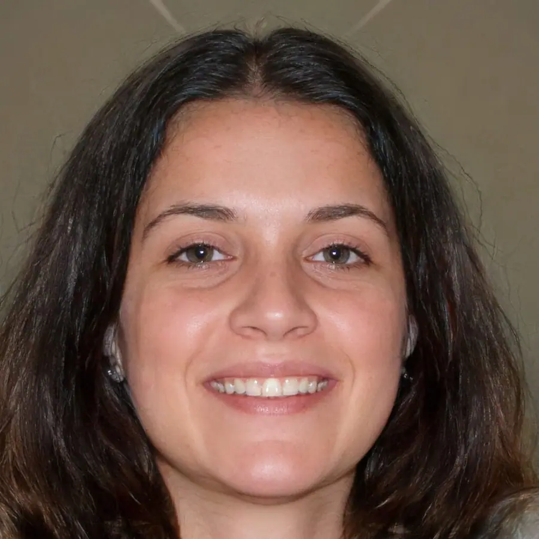
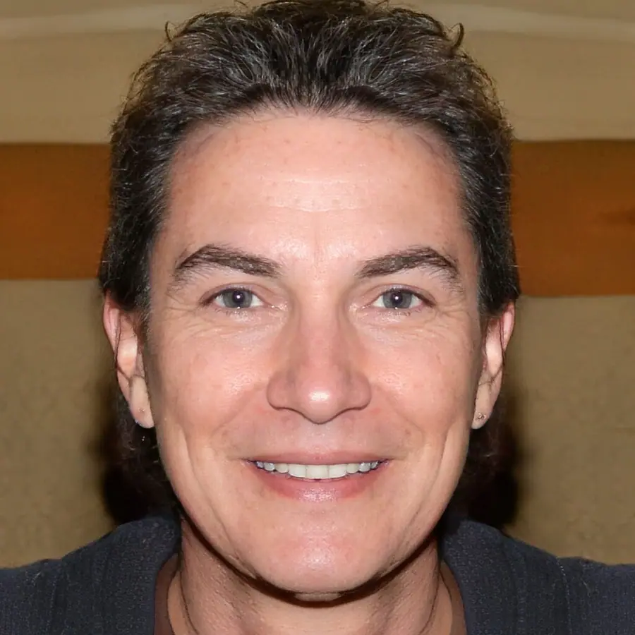
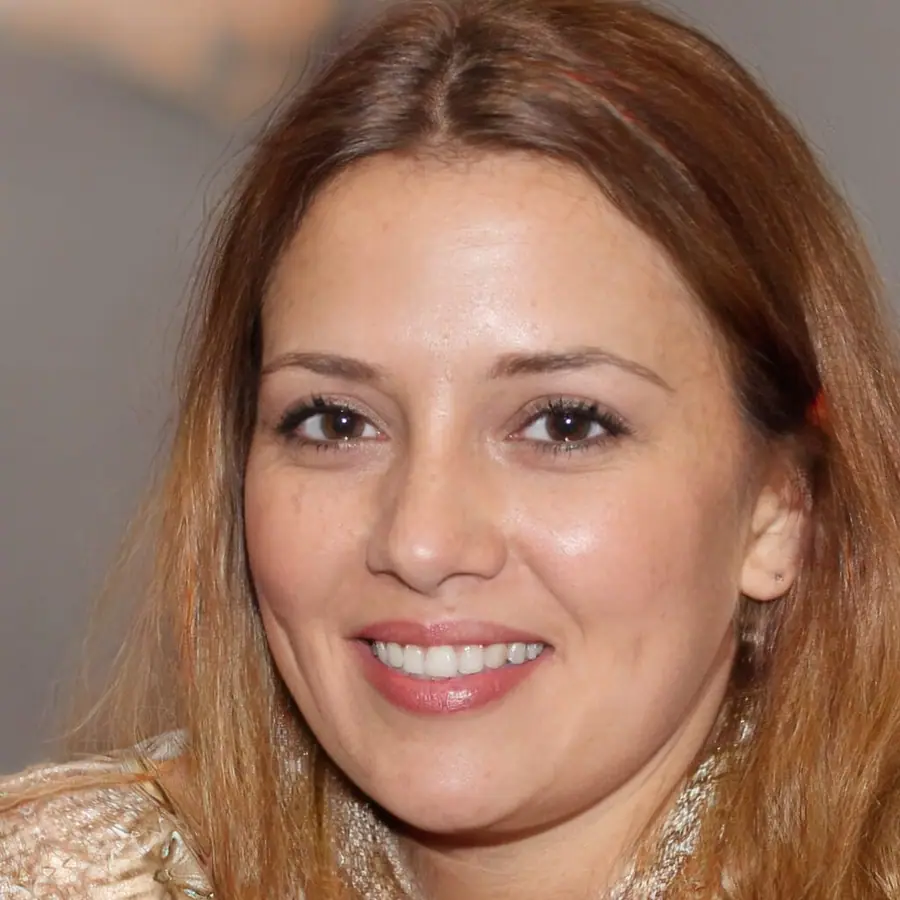
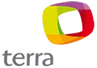
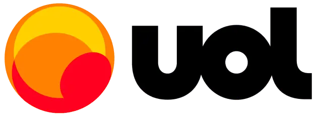
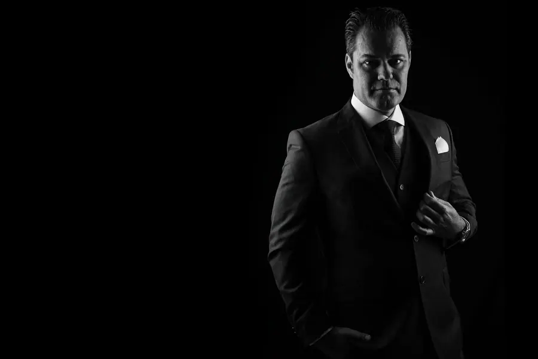
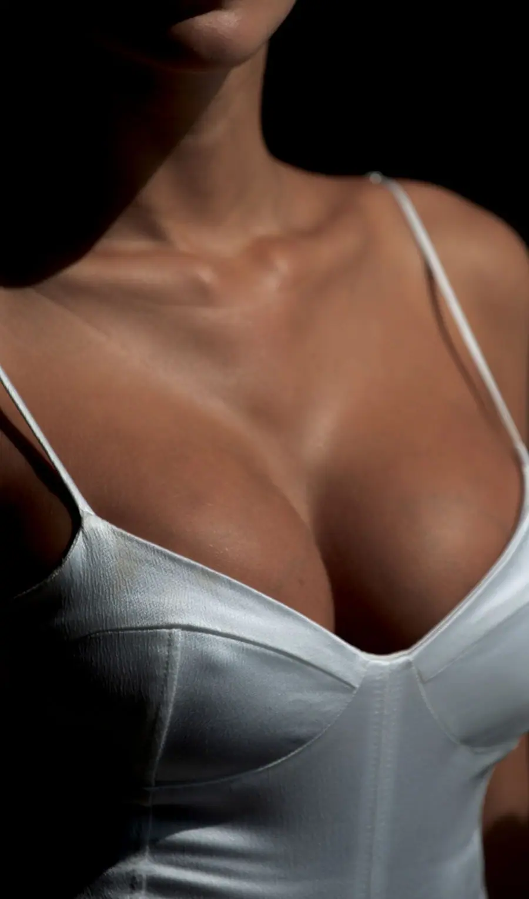
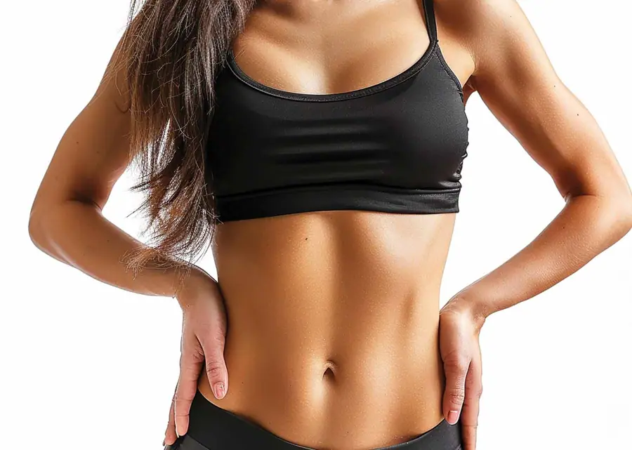
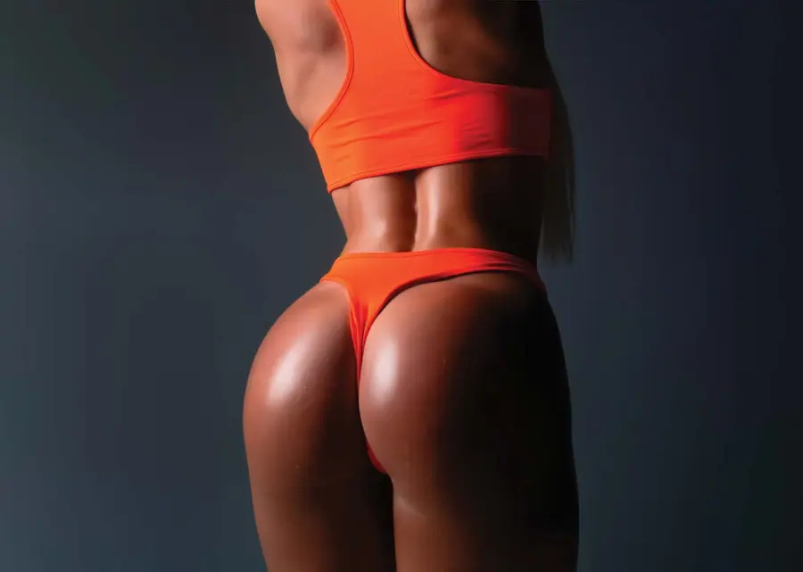
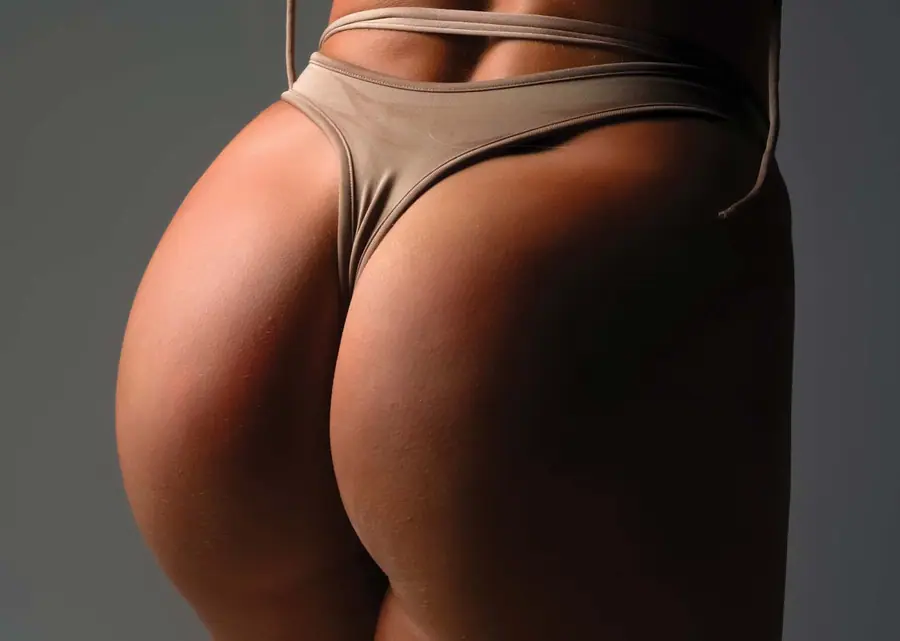
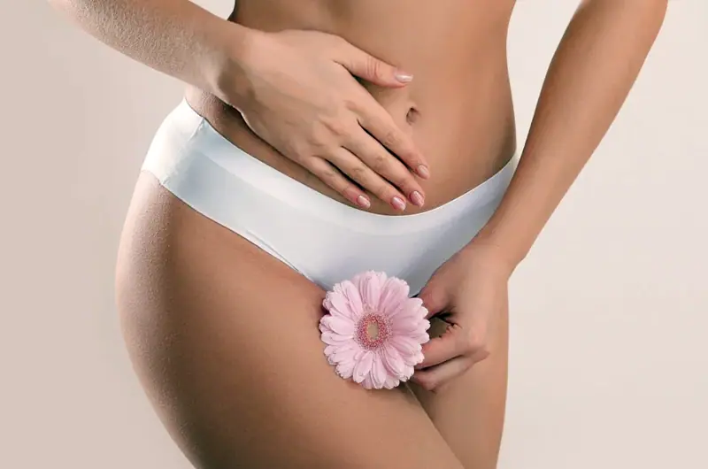
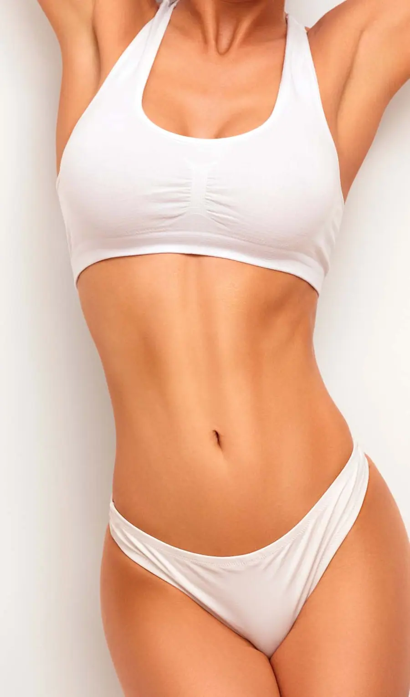
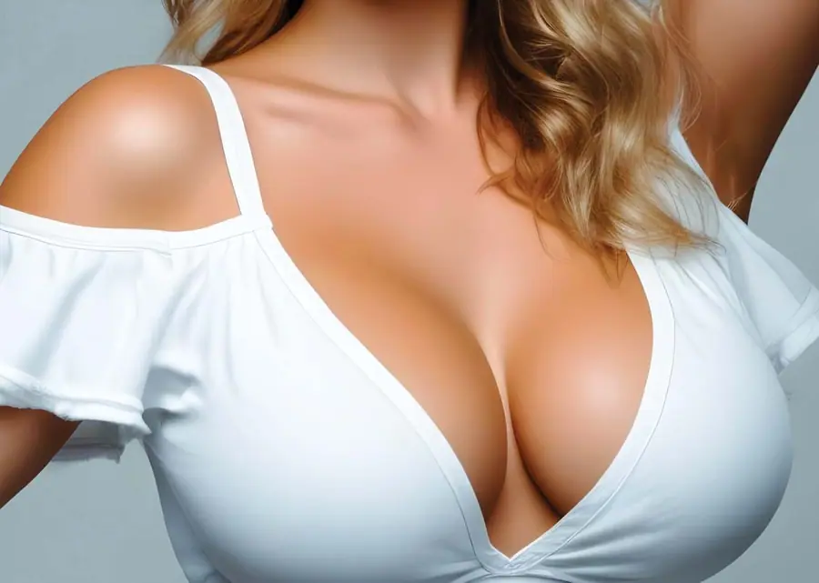
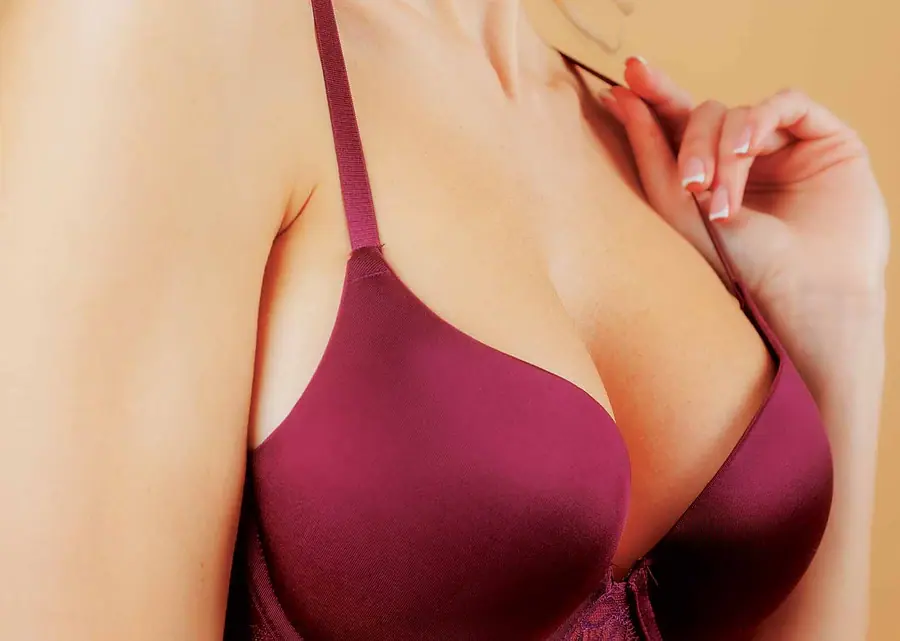
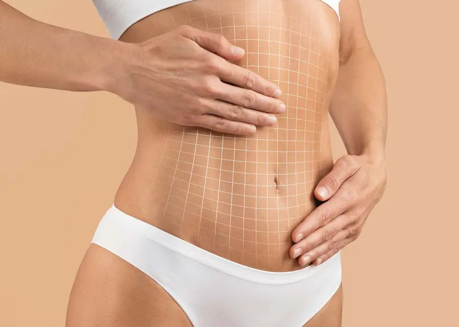
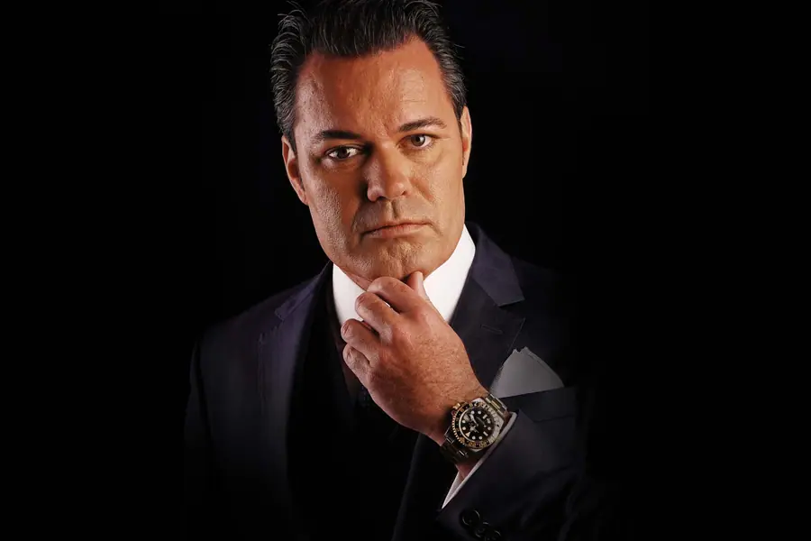